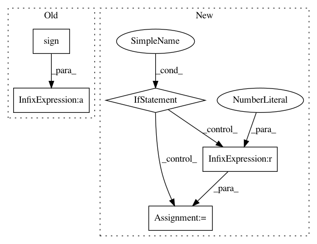

209d35f4c0c1925e73d2cf35a34cd633e085f49a,pymc3/step_methods/hmc/nuts.py,Tree,_build_subtree,#Tree#Any#Any#Any#,260
Before Change
n_proposals = tree1.n_proposals + tree2.n_proposals
left, right = tree1.left, tree2.right
span = np.sign(epsilon) * (right.q - left.q)
turning = turning or (span.dot(left.p) < 0) or (span.dot(right.p) < 0)
if np.isfinite(tree2.log_size) and logbern(tree2.log_size - log_size):
proposal = tree2.proposal
After Change
left, right = tree1.left, tree2.right
if ok:
p_sum = tree1.p_sum + tree2.p_sum
turning = (p_sum.dot(left.v) <= 0) or (p_sum.dot(right.v) <= 0)
log_size = np.logaddexp(tree1.log_size, tree2.log_size)
if logbern(tree2.log_size - log_size):
proposal = tree2.proposal
else:
proposal = tree1.proposal
else:
p_sum = tree1.p_sum
log_size = tree1.log_size
proposal = tree1.proposal
tree = Subtree(left, right, p_sum, proposal, log_size, accept_sum, n_proposals)
return tree, diverging, turning
def stats(self):
In pattern: SUPERPATTERN
Frequency: 3
Non-data size: 5
Instances
Project Name: pymc-devs/pymc3
Commit Name: 209d35f4c0c1925e73d2cf35a34cd633e085f49a
Time: 2017-02-21
Author: adrian.seyboldt@gmail.com
File Name: pymc3/step_methods/hmc/nuts.py
Class Name: Tree
Method Name: _build_subtree
Project Name: mapillary/inplace_abn
Commit Name: a6b09bcc318e4488e94c2a515cdaf762c52bda46
Time: 2019-02-11
Author: samuel@mapillary.com
File Name: modules/functions.py
Class Name: InPlaceABN
Method Name: backward
Project Name: mapillary/inplace_abn
Commit Name: a6b09bcc318e4488e94c2a515cdaf762c52bda46
Time: 2019-02-11
Author: samuel@mapillary.com
File Name: modules/functions.py
Class Name: InPlaceABNSync
Method Name: backward